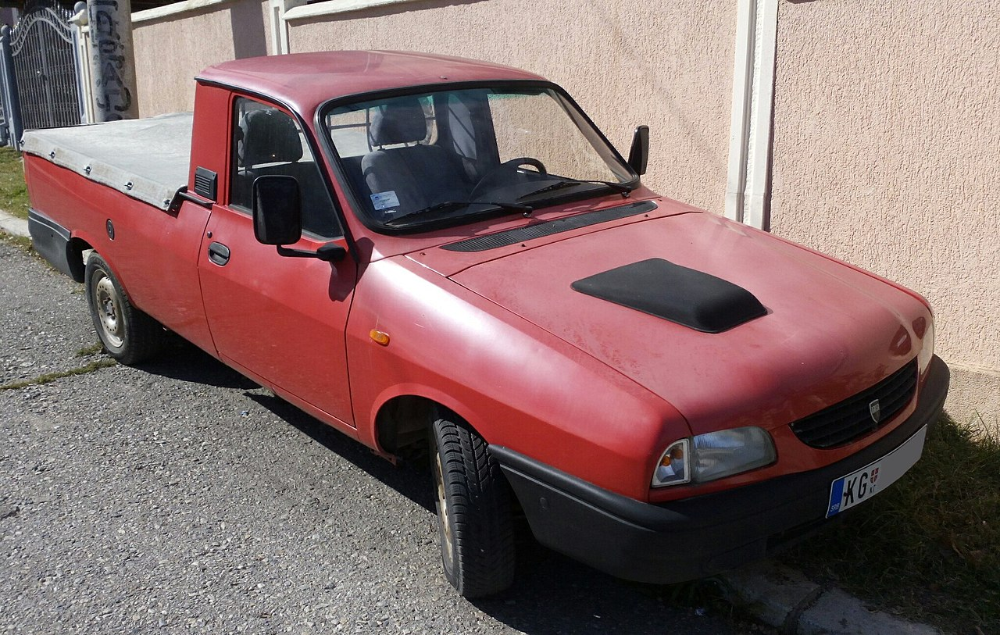

Dacia Pick-up
Dacia Pick-Up (sau Dacia Papuc așa cum a fost denumită popular) este gama de automobile pick-up fabricată de uzina Dacia. Acestea au fost singurele modele din seria 1300 care s-au mai produs la uzină după lansarea Daciei Logan. Acestea au avut la bază modelul Renault 12 dezvoltat la începutul anilor '70 de constructorul francez de automobile Renault.
Variante
Gama pick-up a fost comercializată în șase variante de caroserie:
- Dacia 1302: pick-up cu 2 uși, dezvoltat pe platforma tehnică de la Dacia 1300, apărut în anul 1975 și a fost produsă până în anul 1982. A fost echipată doar cu motor de 1300 cm și 54 cp. Sarcina utilă era de 550 kg. Anvelope 155SR13. Unii posesori au înlocuit motorul de 1300 cmc cu motorul mai mare de 1400 cmc, pentru un cuplu mai bun și a putea face mai ușor față sarcinilor mai ridicate.
- Dacia 1304 Pick Up: pick-up cu 2 uși, cu obloane rabatabile sau cu părțile laterale fixe, fabricat între 1981 si 2006
- Dacia 1304 King Cab: pick-up cu 2 uși, cu banchetă posterioară și oblon spate rabatabil, fabricat între 1994 și 2003
- Dacia 1307 Double Cab: pick-up cu 4 uși, cu cabină dublă, oblon spate rabatabil, fabricat între 1992 si 2006
- Dacia 1309: pick-up cu 4 uși și o benă mai scurtă, derivat din Dacia 1310 Break, fabricat doar între 1992 și 1998. Este aproape identic cu Dacia 1302, dar diferit de 1304, și este derivat direct din dacia break, având spatele acesteia, are un oblon la partea spate și o sarcină de cca 450 kg. Are tractiune față. A fost disponibilă atât cu motorul de 1400 cmc si 64 cp (și varianta detarata la 58 cp) cat și cu cel de 1600 cmc 72 cp. A avut cutie de viteze atât cu 4 trepte, cât și cu 5 trepte. Multe modele au fost exportate în China, dar au fost exportate și în țări precum Grecia, Ungaria, Bulgaria.
Caracteristici
Dacă Dacia 1302 și 1309 sunt modele derivate direct din Dacia 1300/1310, Dacia 1304 este un model diferit, acesta având suspensie diferită la puntea spate, adică arcuri foi, suspensie față ranforsată, anvelope de dimensiuni mărite, 175 SR 14C, tracțiune spate,cu cardan, și sarcină utilă până la 1150 kg. Greutatea remorcii este de 1100 kg pentru varianta cu tracțiune spate sau 1250 kg pentru varianta cu tracțiune 4x4, lansată mai târziu. Varianta cu tracțiune doar pe roțile din față nu era prevăzută pentru tracțiune a unei remorci. Dacia 1304 si modelele derivate nu au fost echipate cu motor de 1300 cmc, ci doar cu cel de 1400 cmc si 64 cp cuplat la o cutie de viteze in 4 trepte. După anul 1997 se renunță la motorul de 1400 cmc, în favoarea celui de 1600 cm și 71 cp, acest din urmă motor fiind lansat în anul 1994, cuplat la cutia de viteze cu 5 trepte. În anul 1999 sunt lansate în productia de serie și variantele 4x4 , prezentate în anul 1998 în cadrul SAB. Tot în anul 1997 apar și variantele cu tractiune pe roțile din față însă cu sarcină utilă mai mică (850 kg). În anul 1997 este prezentată o versiune cu motor diesel Peugeot, 1905 cmc, 70 cp, însă nu au fost fabricate multe exemplare, probabil datorită preluării de către Renault și din cauza prețului mai mare.
 În noiembrie 2002, gama de utilitare Dacia a primit un motopropulsor diesel de 1,9 litri preluat de la Renault,
care s-a alăturat motorului pe benzină care avea o capacitate cilindrică de 1,6 litri.După anul 2001 se renunță
la jantele cu 3 prezoane și sunt adoptate cele cu 5 prezoane. Varianta cu motor diesel este ușor de recunoscut
datorită unei piese din material plastic negru ce iese în relief de pe capota motorului. Motivul: motorul diesel
era mai înalt și nu încăpea sub capotă, motiv pentru care s-a practicat un orificiu în capotă, care a fost acoperit
cu un capac bombat din material plastic.
În noiembrie 2002, gama de utilitare Dacia a primit un motopropulsor diesel de 1,9 litri preluat de la Renault,
care s-a alăturat motorului pe benzină care avea o capacitate cilindrică de 1,6 litri.După anul 2001 se renunță
la jantele cu 3 prezoane și sunt adoptate cele cu 5 prezoane. Varianta cu motor diesel este ușor de recunoscut
datorită unei piese din material plastic negru ce iese în relief de pe capota motorului. Motivul: motorul diesel
era mai înalt și nu încăpea sub capotă, motiv pentru care s-a practicat un orificiu în capotă, care a fost acoperit
cu un capac bombat din material plastic.
După mai bine de trei decenii, pe data de 8 decembrie 2006, gama Pick-up a fost scoasă din fabricație împreună cu transmisia manuală NG. Acest lucru s-a produs datorită scăderii vânzărilor față de anul 2005, dar și al lansării noului model de autoutilitară bazat pe modelul Logan programat pentru februarie 2007. Din 1975 și până în 2006, gama Pick-up a fost produsă în 318.969 unități. Au fost exportate în Grecia, Ungaria, Bulgaria, Polonia, RDG, în special înainte de anul 1990. După anul 1990, exporturile au scăzut, acestea efectuându-se doar în China și în țările din jurul României, Bulgaria și Ungaria in special. În RDG, exporturile au fost mai mici probabil datorită faptului că acolo Rocar TV au fost mult mai apreciate.